싱싱장터 직매장 1호점(본점)은?
2015.9.19.일 개장한 싱싱장터 도담점(1호점)은 세종시민들의 사랑을 받으며 세종시 로컬푸드 운동의 중추적 역할을 자리매김하였습니다.
개장 이후 총매출액 238억, 회원수 2만2천명, 구매자 수 10만8천 여 명, 등록농가수 467농가가 등록하였으며, 농가에는 소득창출을 소비자에게는 건강한 먹거리 제공을 위해 노력하고 있습니다.
도시민은 도심한복판에서 농촌을 만끽 할 수 있으며 생활권 가까이에서 언제든지 로컬푸드 구입이 가능하고 농가는 꾸준한 농산물 납품으로 소득을 올릴 수 있으니 도시-농촌 모두가 행복한 세종의 대표 매장이 되었으며, 세종시 민선6기의 핵심 전략사업인 로컬푸드 운동의 상징이 되었습니다.
| 개 장 일 | 2015.9.19 |
|---|---|
| 위 치 | 세종특별자치시 보듬6로 16(도담동 654) |
| 규 모 | 대지 21,080(약 6,377평), 건축연면적 794(약 240평) |
| 사 업 비 | 18억 9천만원 |
| 자 본 금 | 10억원 (4.8, 농협 2.4, 축협 1.5, SK 1, 생산자법인 0.3) 출자 |
| 주요시설 | 매장, 미니키친, 카페, 저온저장고, 포장작업장, 사무실, 주차시설 등 |
공간배치도
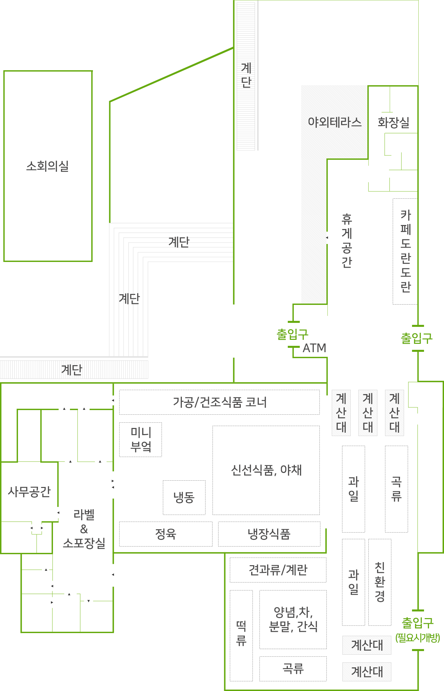
도담점(1호점) 시설사진
- 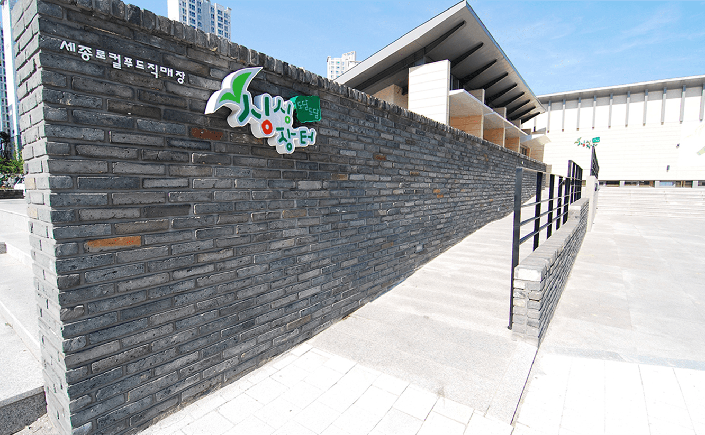 싱싱장터 외부 전경
- 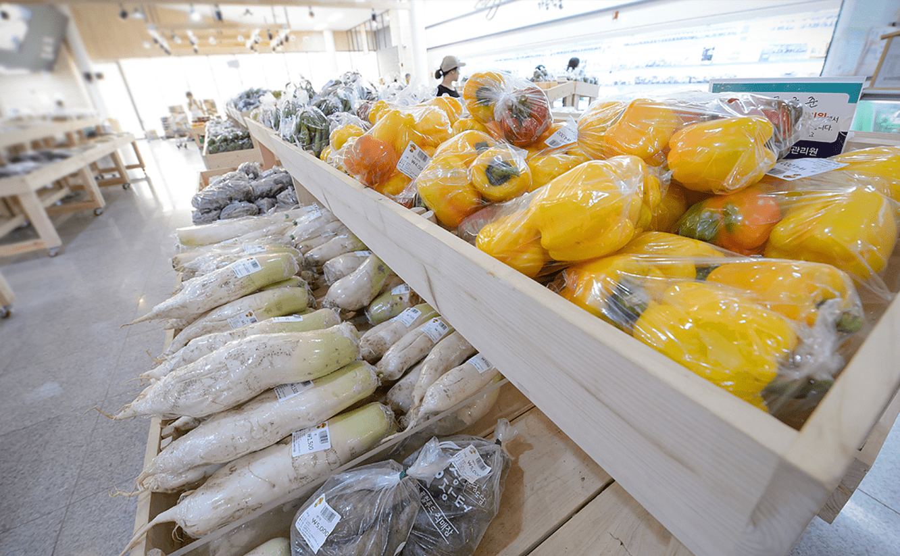 싱싱장터 내부 전경
- 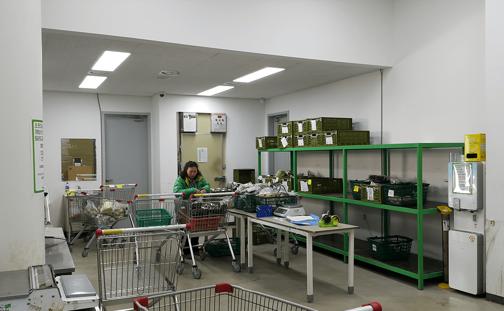 소포장실
- 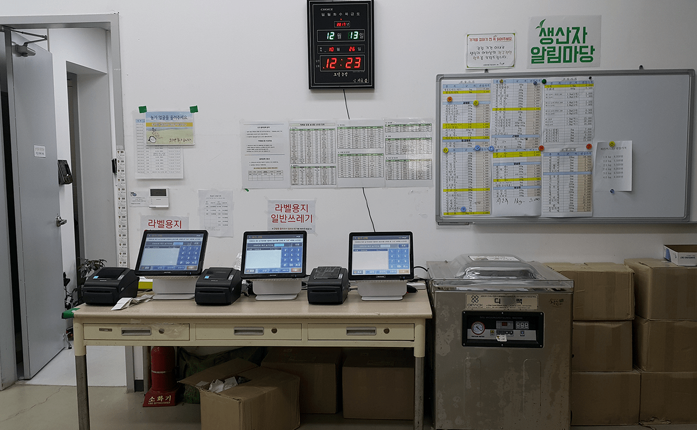 상품가격 농가자율관리실
- 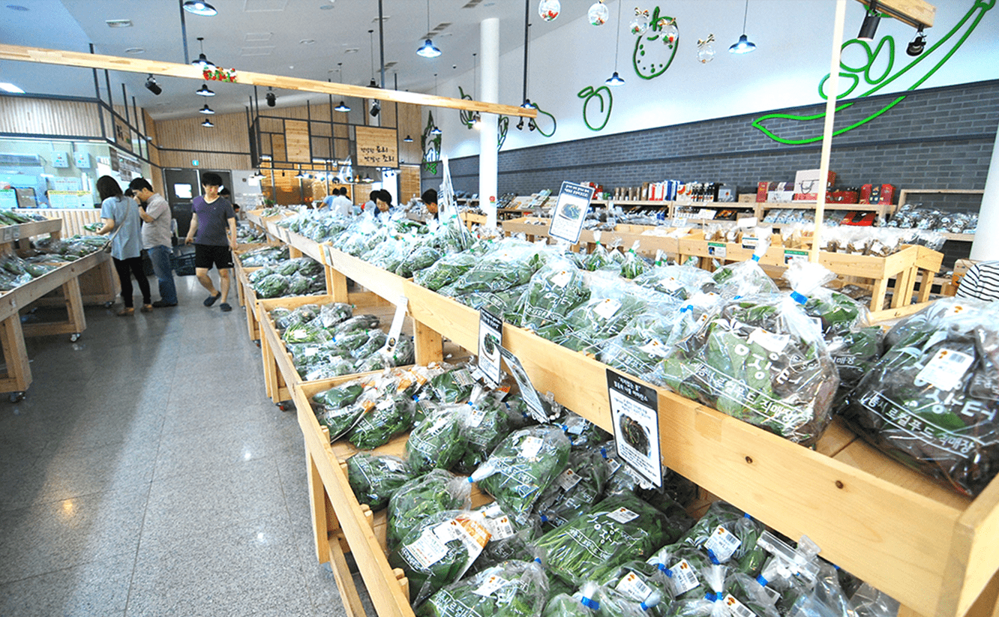 신선식품 코너
- 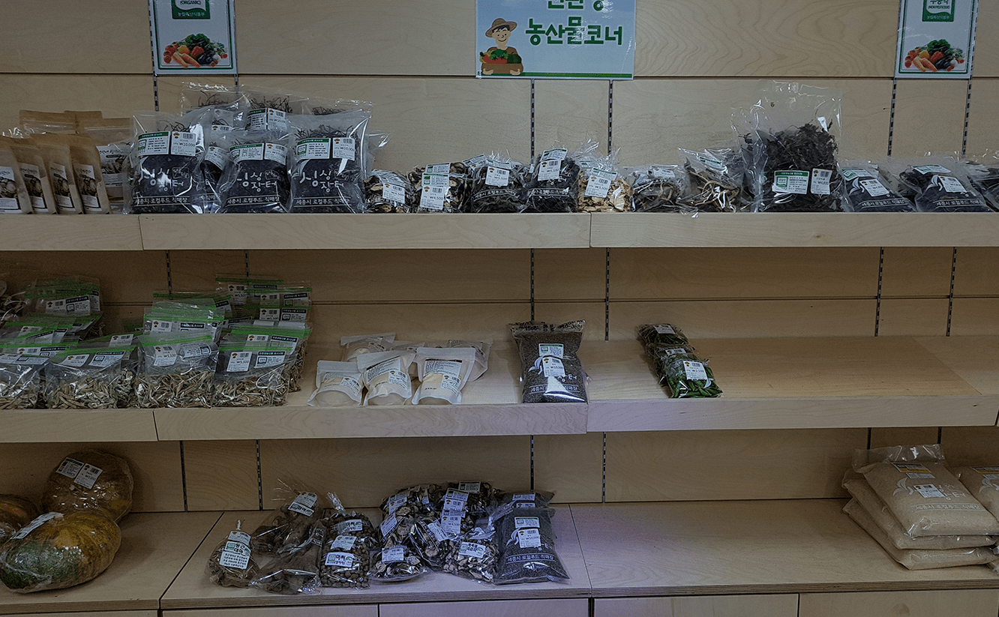 친환경 코너
- 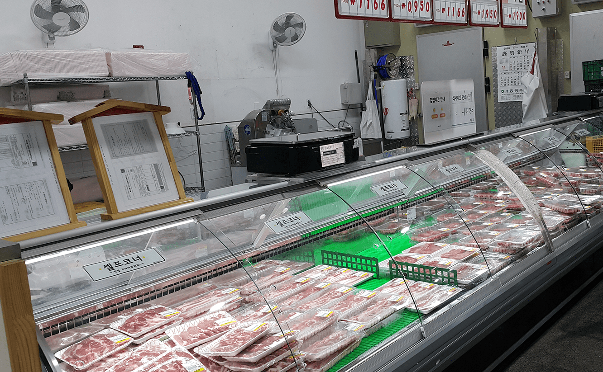 정육 코너
- 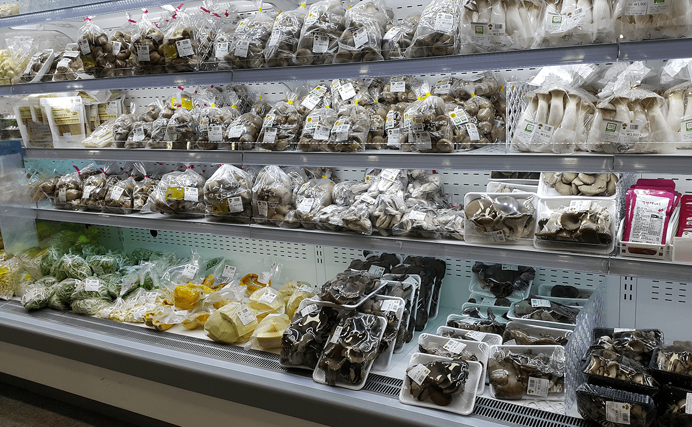 냉장식품 코너
- 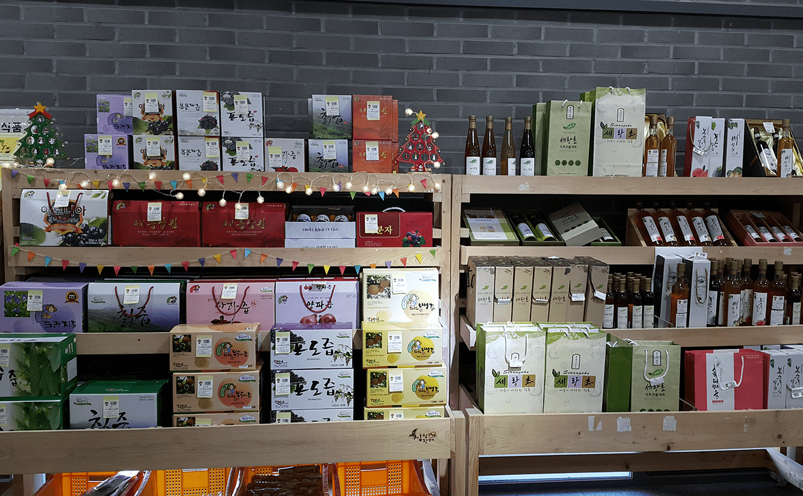 가공식품 코너
- 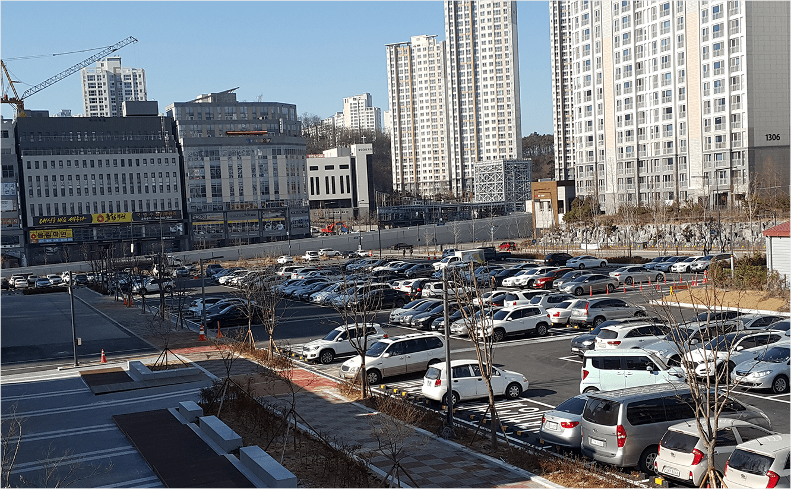 주차장